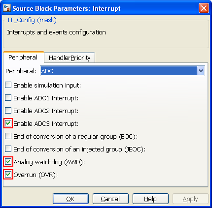

Interrupt Configuration model
Model used to configure STM32F4 interrupts (ExtInt + ADCInt).
Contents
S-Function
Nb Input: 0
Nb Output: 1 IRQ vector

Peripheral window
Peripheral
Peripheral selection to generate IT
ADC
Possibility to select interrupts from ADC1 and/or ADC2 and/or ADC3 peripheral. Selected interrupt is available for all selected ADC. Interrupt parameters are updated from ADC_Init (Example Watchdog values)
EXTInt
GPIO Port can be selected from A to G
Line number selection is from 0 to 15
External Interrupt generation available for Falling, Rising or both edge.
Systick
Do Not use it.
It is already used to manage solver fundamental sample time.
HandlerPriority window
IRQ Handler
IRQ Handler name is defined in asm startup_stm32f4xx.s source file. (STM32F4xx\lib\CMSIS\Device\ST\STM32F4xx\Source\Templates)
Uncheck Default Handler to change it. (if startup_stm32f4xx.s has been modified)
Do not forget to comment dummy IRQHandler from provided stm32f4xx_it.c file. (STM32F4xx\src)
Priority
Group Priority can be selected from group 0 to group 4.
Preemption priority and Sub priority depend on selected group. Higher priority is for group0, preemption 0 and sub priority 0.
Example1
Push button to blink LEDs.
This example is based on STM32F4-Discovery board. External interrupt 0 is defined for GPIOA line0. LEDs are alternately ON and OFF when user button is pushed.

GPIOA Pin0 is configured as input for user button

PortD Pin12 to Pin15 are configured as output to control LEDs.
EXTint configured on GPIOA line 0 for Falling edge.
Example2
Watchdog guarded ADC configuration example.
This example is based on STM3240G-EVAL board. Analog-to-digital converter (ADC3) reads potentiometer value from PortF-Pin9 and send it through USART when watchdog interrupt occures.

Channel 7 (portF-pin9) is Regular, Continuous conversion mode. Guarded by the analog watchdog.

Low and High threshold are configured for channel 7 single regular channel

PortF Pin9 is analog mode configured.

Interrupt Watchdog and OVR are configured for ADC3

Default ADC handler function name is used. It is configured into the startupt file. It is possible that stm32f4xx_it.c file (/src) has to be modified.